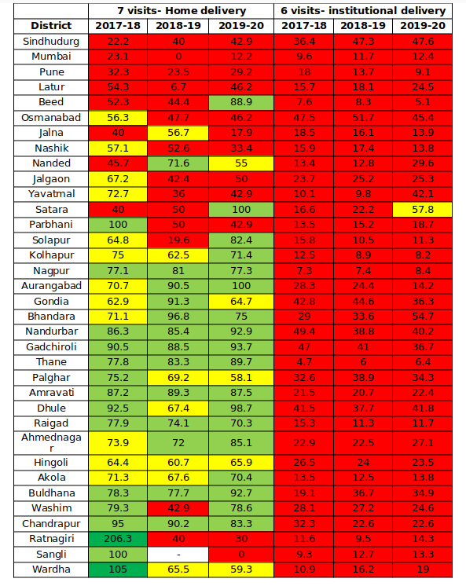
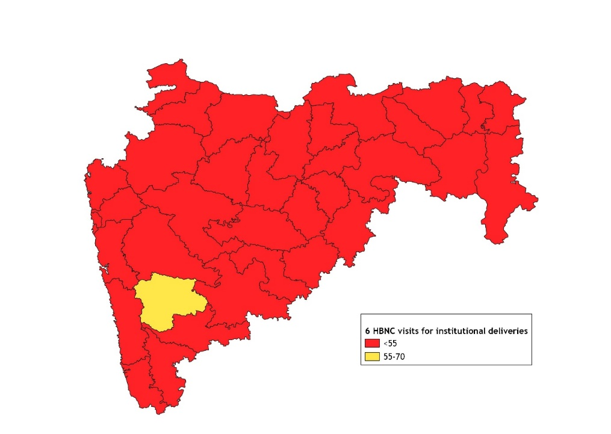
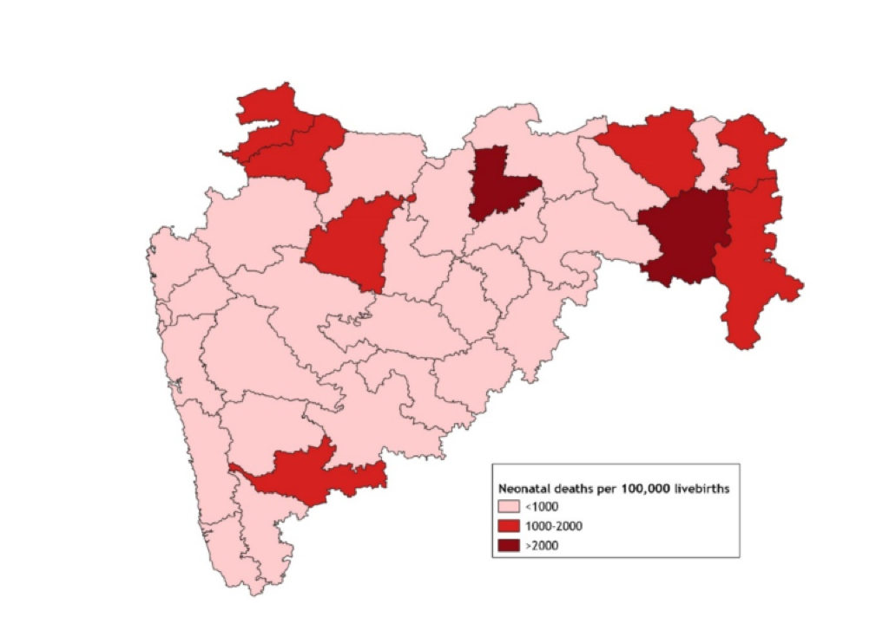

The first year of life is a period of high vulnerability during childhood. However, even with the first year of life, the first month of life carries a high risk of mortality and contributes significantly to both infant and child mortality.1 Hence, attaining or maintaining targets towards the Sustainable Development Goal (SDG)-3 requires comprehensive action during the neonatal period. In India, a significant number of neonatal deaths especially in rural regions, occur at home.2 Efforts to improve child survival hence emphasize a “continuum of care” approach and include community outreach to ensure that critical services are made available at home.3 Home-based newborn care (HBNC) delivered since 2011 by community health workers is an essential component of this package and has proven to effectively reduce neonatal and infant mortality rates in India.4-5 As per government mandate, Accredited Social Health Activist (ASHA) would have to ensure that the newborn is safe up to 42 days of life which will includes identifying illnesses, monitoring weight, supporting exclusive breastfeeding, promoting safe and hygienic care practices, etc. For this purpose, ASHAs are given incentives to conduct six home visits in case of institutional delivery and seven visits in case of home delivery till 42 days of delivery.3
Maharashtra is one of the six states in the country that has already met the SDG target of reducing neonatal mortality rates to 12 or below by 2030.6 In 2020, Maharashtra reported a neonatal mortality rate (NMR) of 11 per 1000 live births and an infant mortality rate (IMR) of 16 per 1000 live births which is considerably lower than country-level figures at 20 and 28, respectively.7 However, the state also reports a high prevalence of infants born with a low birth weight and has moderate incidence of preterm births, two critical factors that contribute to neonatal mortality in India.5,8 Ensuring that all children born receive adequate home-based newborn care is critical to maintaining low neonatal mortality rates in the state. In this context, the current policy brief uses the Health Management Information System (HMIS) data to examine Maharashtra’s adherence to the Ministry of Home Based New Born Care guidelines.
Implementation for home or institutional births better?
Home-based newborn care (HBNC) is a strategy adopted by the Government to reduce the burden of newborn deaths in the first few weeks of life.3 Frontline workers like ASHAs have to ensure newborn survival by making six periodic visits to the homes of newborns delivered in the institution and seven visits to those delivered at home. Maharashtra has a low neonatal mortality incidence (711 per 100,000 LB in 2019-20), but programs like HBNC can ensure that the state maintains a low neonatal mortality incidence or reduces the incidence further.

Source: HMIS
Note: Figures for Mumbai and Mumbai Suburban not reported separately; blanks where 0 cases of home delivery reported.
Majority of births occurring in Maharashtra are institutional births. According to HMIS data, part from two districts (Nandurbar and Gadchiroli), rest of Maharashtra had universalized institutional delivery and reported negligible incidence of home deliveries (<5%) between FY-18 and FY-20. Most babies born at home in these two predominantly tribal districts had received 7 home visits as per the scheme guidelines during this period. The coverage of the mandated HBNC visits for home deliveries was noticeably higher than that for institutional deliveries. Between 2017-18 and 2019-20, the data indicates a consistent lack of adherence to the scheme’s requirement of six HBNC home visits for institutional deliveries across all districts (See Table 1). This implies that the majority of newborns in the state are not receiving sufficient home-based newborn care as per the guidelines of the scheme. Throughout the three-year period, Thane, Beed, and Nagpur consistently reported the lowest adherence to the requirement of six Home-Based Newborn Care (HBNC) visits for institutional deliveries.

In 2019-20, except Satara, most of Maharashtra had very poor coverage. However, seven of the ten bottom performing districts with the lowest figures of home HBNC visits for institutional deliveries had a significant urban population (>30%).9 This is not surprising since the programme was initially introduced in 2011 with a goal to reduce neonatal mortality in rural areas.3

Fig 2. Coverage of HBNC home visits for institutional deliveries -FY20
Coverage patterns of HBNC for home deliveries varied throughout the state. In 2019-20, most districts with high coverage (>70% coverage) were located in the northern and north-eastern parts of the state. A notable cluster of high-coverage districts was also found in central Maharashtra (Figure 1). Given the low to negligible prevalence of home deliveries in most districts, attaining complete coverage of home deliveries in all districts is a low hanging fruit. In the case of institutional deliveries, nearly all of Maharashtra appears to be in the red (Figure 2).

Fig 3. Neonatal deaths in Maharashtra -FY20
While Maharashtra reported a low rate of neonatal mortality in 2019-20, two districts (Akola & Chandrapur) reported neonatal deaths more than 2000 per 100,000 live births and seven (Gondia, Gadchiroli, Sangli, Nandurbar, Dhule, Nagpur & Aurangabad) reported deaths between 1000-2000 per 100,000 livebirths (Figure 3). It is crucial to implement measures to enhance Home-Based Newborn Care adequately for institutional births in these nine districts.
Policy Implications & Recommendations
Maintaining a “continuum of care” is very crucial for ensuring child health and well-being. Central to this tenet, the Home-Based Newborn Care scheme for newborns aims to deliver cost-effective interventions to vulnerable populations at the community level. The current policy brief identifies regions for targeted action which can aid the efficient distribution of resources and effectively address persistent issues related to maternal and child health in those regions. According to HMIS data, there are 9 districts in Maharashtra that reported a moderate or high prevalence of neonatal deaths in 2019-20. However, among these districts, Akola, Chandrapur, Nagpur, Sangli, and Aurangabad districts need to be prioritized as less than one fifth newborns born in facilities in these districts received the mandated 6 HBNC home visits.
The state needs to also work towards the goal of total coverage for home deliveries in all districts. While there is need for further research to evaluate HBNC coverage levels and quality and reasons for poor performance, few actions to improve coverage can be suggested.
- ASHAs have to deliver various interventions as per HBNC guidelines including providing immediate newborn care for all babies including preterm babies, early identification of severe illnesses and support families to adopt good health practices like exclusive breastfeeding.3 Hence capacity building to deliver these services is essential. District Health Training Centres under the Public Health Department need to periodically sensitize ASHA workers, ASHA facilitators and ANMs about the programme and provide refresher training for ASHAs.
- The Home-based New-born care guidelines revised in 2014 stipulate that ASHAs should receive Rs. 250 per neonate for 6 visits in case of institutional deliveries and 7 in the case of home deliveries but there has been no revision in the past decade.3,10 Periodic enhancement of incentives could aid the delivery of HBNC services by ASHAs. ASHA Facilitators should ensure that ASHAs get their incentives from the primary health centre in a timely manner.
- ASHA facilitators should provide necessary supervision to ensure delivery of HBNC including guidance on family counselling, use of equipment, completion of HBNC home visit forms, etc. They could also conduct few joint visits with ASHA worker to the newborn’s home per month. ASHA facilitators or Auxilary Nurse Midwives should ensure that all ASHAs have received the equipment, consumables, and drugs to deliver HBNC from Primary Health Centres. The progress of HBNC and any related grievances by ASHAs should be discussed periodically in meetings.
References
- WHO. (2022). Newborn Mortality Factsheet. Retrieved from: https://www.who.int/news-room/fact-sheets/detail/levels-and-trends-in-child-mortality-report-2021
- Bang, A. T., Bang, R. A., Baitule, S. B., Reddy, M. H., & Deshmukh, M. D. (1999). Effect of home-based neonatal care and management of sepsis on neonatal mortality: field trial in rural India. The lancet, 354(9194), 1955-1961.
- MoHFW. (2014). Home Based Newborn Care Operational Guidelines. Revised 2014. National Health Mission.
- Rasaily, R., Saxena, N. C., Pandey, S., Garg, B. S., Swain, S., Iyengar, S. D., … & Bang, A. T. (2020). Effect of home-based newborn care on neonatal and infant mortality: a cluster randomised trial in India. BMJ global health, 5(9), e000680.
- MoHFW. (n.d.) Child Health. Retrieved from: https://nhm.gov.in/index1.php?lang=1&level=2&sublinkid=819&lid=219
- MoHFW. (2022). India achieves significant landmarks in reduction of Child Mortality. Retrieved from: https://pib.gov.in/PressReleasePage.aspx?PRID=1861710#:~:text=Neonatal%20Mortality%20Rate%20has%20also,to%2023%20in%20rural%20areas
- Office of the Registrar General & Census Commissioner. (2022). Sample Registration System Statistical Report 2020. Census Digital Library.
- Jana, A. (2023). Correlates of low birth weight and preterm birth in India. PLoS One, 18(8), e0287919.
- Government of India. (2011). Maharashtra district wise map-urban population percentage. Census 2011. Retrieved from https://www.censusgis.org/india/
- NHM (n.d.). ASHA incentives – FY 2020-21. National Health Mission. Retrieved from: https://nhm.punjab.gov.in/advertisements/ASHA_Prog/Community%20Processes.pdf
We acknowledge the support of the National Health Mission, CTARA-IIT Bombay, and the GISE Hub, IIT Bombay.
Authors
Marian Abraham, Prof. Sarthak Gaurav
Marian Abraham is a Senior Research Analyst at the Koita Centre For Digital Health, IIT Bombay.
Prof. Sarthak Gaurav is an Associate Professor at Shailesh J. Mehta School of Management, IIT Bombay.
Suggested citation: Abraham, M., & Gaurav., S. (2024). Implementation of home-based new-born care guidelines in Maharashtra: A review. Nutrition Group, IIT Bombay.